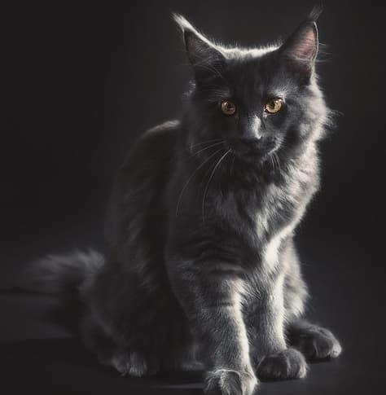
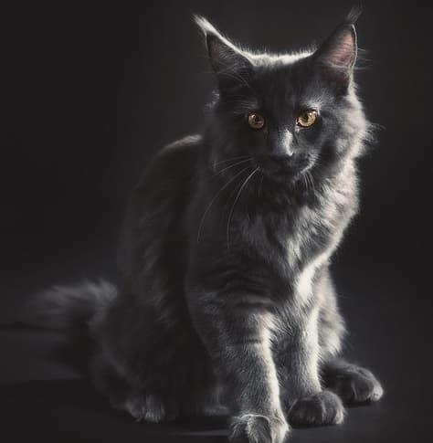

Питомцы
Все представители нашего питомника имеют ветеринарный паспорт с отметками о прививках и документ с родословной
 
Особенности породы
Мейн-Кун - это порода, которая вызывает к себе уважение. Приобретая в свой дом этого питомца, вы получите умное животное, которому нет равных
Легко уживается в семьях с детьми или другими животными
Выполняет команды как дрессированная собака
Вес может достигать 12 кг, а длина 1 м
Внешний вид этой кошки похож на дикую рысь
Почему именно мы?
Приобретая животное в нашем питомнике, вы получите
Бесплатное ветеринарное
обслуживание 5 летКонсультирование по любому
вопросу 24 часа в суткиИндивидуальный подбор
питания для вашего кота
Об уходе за Мейн-Куном
Шерсть
Мы разработали 8 правил, следуя которым, шерсть вашего кота всегда будет блестящей, мягкой и послушной
Уши и глаза
Владельцам котов необходимо регулярно осматривать ушки и глазасвоих питомцев, ведь это может быть признаками заболевания
Когти
Нужно ли стричь когти? Это мы и выясним, плюс ко всему расскажем как подобрать идеальную когтеточку
Питание
В нашем питомнике существует два подхода: натуральное питание и питание промышленными кормами, но выбирать только вам
Вопрос-Ответ
Мы ответим на самые популярные ваши вопросы
01
С какого возраста можно забирать котенка из питомника?
Есть важная причина, почему котенка стоит забирать домой только после трех месяцев, — это вакцинация. Первые прививки животному делают в возрасте 8 недель. Ревакцинация проводится через 3–4 недели. То есть котенок, покидающий дом позднее 12 недель, максимально защищен от различных вирусов и инфекций.
Так что, чтобы в дома появился психически и физически здоровый котенок, игривый, жизнерадостный, самостоятельный и воспитанный, не спешите забирать его от кошки-мамы раньше трех месяцев.
02
Как зарезервировать котенка?
03
Можно ли купить кота, если я живу в другом городе?
04
Как подготовить дом к приему нового питомца?